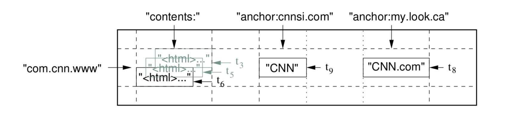
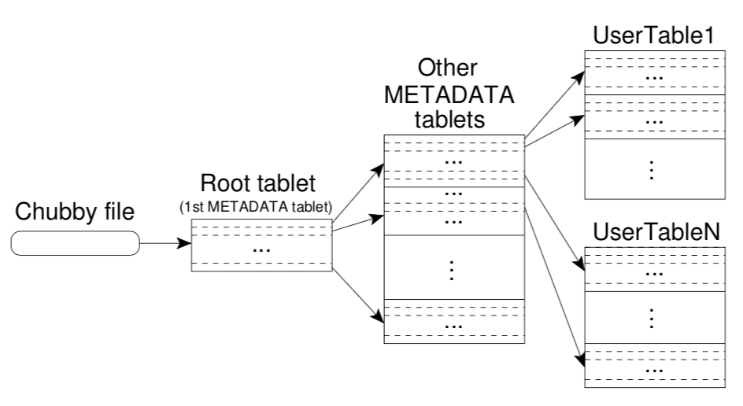

前言
BigTable是谷歌在2004年时开发的NoSQL数据库，引领了新世纪NoSQL的潮流，也为传统数据库的Scale-out提供了思路，是十分划时代的产品。
由于BigTable本身是闭源的（开源版本数据库产品为HBase，存储引擎部分为LevelDB）,因此这篇文章主要分析的是Google在2006年发表的BigTable论文（主要作者为Jeff Dean等大牛）。
虽然现在已经是9102年了，很多技术已经有了翻天覆地的变化，但是这篇论文中的很多思想仍然十分有借鉴意义（虽然大部分内容算是广告）。
目录
BigTable是十分精简的一篇论文，只有14页。
其主要分为10个部分，分别是：
1 Introduction: 简介2 Data Model: 主要介绍BigTable的数据存储模型3 API: 接口设计4 Building Blocks: 相关的infra组件5 Implementation: 具体实现6 Refinements: 系统优化7 Performance Evaluation: 性能评估8 Real Applications: 实际场景下的应用9 Lessons: 一些心得10 Related Workd: 相关工作
接下来本文将对各个部分进行尽可能细致的分析。
Introduction
Over the last two and a half years we have designed, implemented, and deployed a distributed storage system for managing structured data at Google called Bigtable. Bigtable is designed to reliably scale to petabytes of data and thousands of machines. Bigtable has achieved several goals: wide applicability, scalability, high performance, and high availability.
Bigtable is used by more than sixty Google products and projects, including Google Analytics, Google Finance, Orkut, Personalized Search, Writely, and Google Earth. These products use Bigtable for a variety of demanding workloads, which range from throughput-oriented batch-processing jobs to latency-sensitive serving of data to end users. The Bigtable clusters used by these products span a wide range of configurations, from a handful to thousands of servers, and store up to several hundred terabytes of data.
Introduction的开头首先介绍了一下BigTable诞生的背景，以及它的一些特点。
我们可以看到一些关键词：
distributed storage system:BigTable与传统数据库很大的一个不同是——它是一个真正意义上的分布式存储。可以做到完全Sharding，读写都在不同的节点上完成。不像传统的主从复制模式，只能在主节点进行写操作。wide applicability, scalability, high performance, and high availability: 我们知道大家在推销自己的产品时总会有一些夸大的成分，G家也不例外。这里提到BigTable实现了高通用性，扩展性，高性能，高可用。后两点存疑，高通用性主要得益于key-value的模型，但也只是通用，并不一定好用。因此我们重点关注的它的扩展性。
这一部分我们可以看到BigTable尝试去解决的一些问题。
首先我们知道，传统的RDBMS关系型数据库非常依赖单机的性能。
在计算机领域Scale-out可以分成两个流派：
- 以IBM为首的大型机流派，通过堆砌单机的性能来支撑更高负载的系统，也就是垂直扩展
- 以Google等互联网公司为首的分布式集群流派，通过堆砌机器数量来提高性能，也就是水平扩展
老牌的数据库，如Oracle, MySQL, 都是设计成的单机模式，当单机的性能达到瓶颈时就无法扩展了。
然而在互联网的场景下，会有很多海量数据处理的需求。
谷歌作为互联网企业的领头羊，很早就摸到了传统数据库的天花板，因此他们尝试着设计了一套分布式存储的解决方案，也就是BigTable。
在解决Scale-out问题的同时，谷歌也在思考另一个问题，就是能否将数据的存储模型做的更加的通用化。
为此，他们结合key-value的映射模型，设计了row-column-data的映射模型。
虽然后来的很多场景证明这种方式存在一些缺陷（事务封装，查询优化等），谷歌也在2010年后研发了新的Spanner数据库，但这仍不失为一次伟大的尝试。
Data Model
这一部分主要是介绍了BigTable的一个数据存储模型。
BigTable使用的是
(row:string, column:string, time:int64) → string
这样的一种映射。
通过row, column和时间戳对应一个具体的value。
这里有一张图：

我们可以尝试用RDBMS的Table中的一些概念来描述这个模型。
在数据库中的每个Table会有一个Schema，也就是表头。这个表头描述了每条记录的fields。
每条记录都会有一个Primary Key，用于帮助数据库定位到唯一的一条记录。
在BigTable中每一个row对应的表里的一条记录，这个row扮演的就是一个Primary Key的角色。
column则是对应的记录的fields。
两者的Table概念是比较相似的，但是不同的是，BigTable直接将TimeStamp作为key的一部分（虽然RDBMS也可以使用created_time之类的做联合主键，但这是optional的），而且BigTable的column有column families的概念，这个之后会提到。
这就表示BigTable会更加强调一个时间戳的区别，我们可以将其定义为版本，即相同(row, column)的不同版本。
论文中提供了一个使用场景的例子：Google的网页爬虫存储。对于一个Page，可以把URL作为row，将Page的具体内容存储在content这个column下。同时，我们可以将爬取的时间作为timestamp，这样可以记录一个网页在不同时间下的内容。
现在BigTable的Data Model的形态已经描绘出来了，接下来我们来看看一些细节。
Rows
论文中row相关的point如下：
BigTable的row key可以是任意的字符串- 对于单个
row key的每个读写请求都是原子的 BigTable会按照字典序维护row keyrow key有动态的分区，每个row range被称作tablet，是分布式存储的基本单元（entry和tablet是1toN关系）
使用任意的字符串作为row key的好处是用户可以自定义row key的内容，这样表达能力会更强。
由于BigTable是按照row key的字典序来编排记录的，用户可以利用这点来做一些局部查找的优化。比如说，需要对某个域名下的所有网站进行分析，可以使用URL作为row key。这样像www.baidu.com/a.html，www.baidu.com/b.html很有可能在同一个tablet上，因为有共同的prefix。如此一来查询的速度就可以得到一定程度上的优化。
但是这样缺点也很明显，那就是随着key长度的增加，比较的复杂度也会线性增长，所以需要用户自己来平衡。
BigTable本身没有提供事务的功能，但是能保证原子性，因此在业务层实现事务也不会特别困难。
Coloumn Families
Column Families一般被翻译成列族，这个概念使用过HBase的同学会比较熟悉。
简单来讲，每个Column Families下会有许多的Column。用户需要通过family:qualifier的方式获取到具体到具体的Column。
Timestamps
BigTable主要的应用场景还是Google的爬虫业务。
我们知道爬虫本质上是提供了一个网页快照，那么为了方便管理，一般会保留多个版本的快照。
BigTable使用了64位整数来表示一个微秒级的时间戳。因为时间戳具有单调递增的特性，可以用来表示一个版本关系。
BigTable在此之上还提供了一些版本GC的功能，比如可以配置为只保留最后N个版本的记录。
API
BigTable作为一个NoSQL数据库，其API也十分简洁。
这里直接以论文中的C++代码为例：1
2
3
4
5
6
7
8
9
10
11
12
13
14
15
16
17
18// Open the table
Table *T = OpenOrDie("/bigtable/web/webtable");
// Write a new anchor and delete an old anchor
RowMutation r1(T, "com.cnn.www");
r1.Set("anchor:www.c-span.org", "CNN");
r1.Delete("anchor:www.abc.com");
Operation op;
Apply(&op, &r1);
Scanner scanner(T);
ScanStream *stream;
stream = scanner.FetchColumnFamily("anchor"); stream->SetReturnAllVersions(); scanner.Lookup("com.cnn.www");
for (; !stream->Done(); stream->Next()) {
printf("%s %s %lld %s\n", scanner.RowName(),
stream->ColumnName(),
stream->MicroTimestamp(),
stream->Value());
}
Building blocks
这一部分主要描述了BigTable的外部依赖。
BigTable是一个运行在云上的分布式数据库，其使用大名鼎鼎的GFS作为文件系统，用于存储data和log文件。
这里先提一下，BigTable使用的是LSM-tree的数据结构，其数据文件主要分为SSTable和LOG文件。SSTable即为存储具体data的数据文件。
BigTable同时还依赖了Chubby，一个使用Paxos算法的分布式锁中间件，用于保证集群的一致性。
Implementation
终于到了论文的核心部分，这一部分描述了BigTable的具体实现。
BigTable主要有三个组件：
- Client用于连接
BigTable的库，类似SDK - 一个Master节点
- 许多个Tablet节点
这里需要注意的是Client无需通过Master节点来知道自己该访问哪个Tablet节点。
BigTable的Master节点主要负责的是为Tablet节点分配Tablet，检测Tablet节点的状态（节点增减，负载等），回收GFS上的资源，维护Tablet的meta信息（列族创建等）。
我们可以发现这其中的Master承担的更像是一个Monitor的角色，但也正是因为Client不会直接依赖Master，系统的可用性会有些许提升。
接下来将从四部分来描述BigTable的具体实现：
Tablet Location: Tablet节点的定位Tablet Assignment: Tablet的分配Tablet Serving: Tablet处理请求的过程Comapctions: LSM-tree的Compaction
Tablet Location
BigTable采用了一个三层的B+树来存储Tablet的位置信息，如下图：
